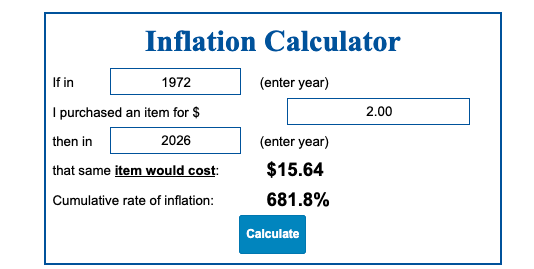

Apple 50 | A Két Steve
Steve Jobs és Steve Wozniak kapcsolata olyan volt, mint a Beatles. Persze, nem csak én tettem meg ezt a megfigyelést, maga Jobs is:
Az én üzleti példaképem a Beatles. Négy srácból állt, akik egymás negatív tendenciáit kordában tartották. Kiegyenlítették egymást, és a végtermék sokkal jobb volt, mint a négyük külön-külön. A nagyszerű dolgokat az üzleti életben sosem egyetlen ember viszi véghez, hanem egy csapat.
Steve Jobs és Steve Wozniak barátsága 1971-ben kezdőtőtt, egy közös barát Bill Fernandezen keresztül. Wozniak akkor 21, és Jobs 16 éves volt. Fernandez főleg azért gondolta, hogy jó barátok lehetnek, mert:
- Mindketten szerették az elektronikát
- Szerettek csínyeket elsütni
- Mindketten kíváncsiak voltak az új technológiák iránt
Pár héttel megismerkedésük után, elkezdték az első közös projektjüket: A Kék Dobozt (The Blue Box). De, mire is volt ez az eszköz jó? Akkoriban a nemzetközi hívások nagyon drágák voltak, és az átlag ember nem tudta megengedni magának
